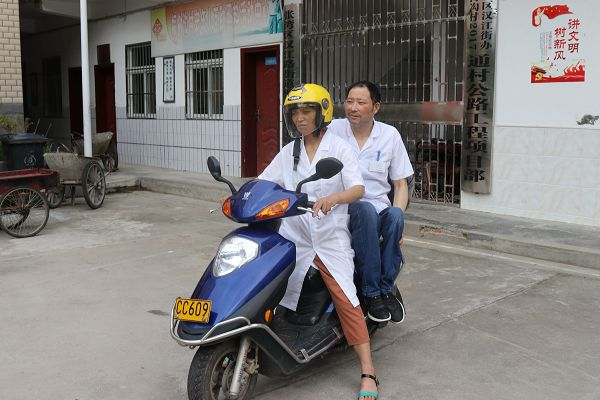
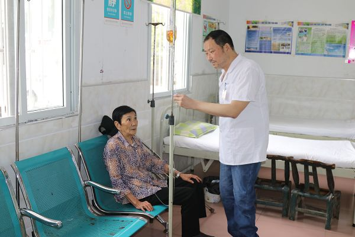

本网讯（甘成平 庹海波）他从小患有小儿麻痹后遗症，却立志从医，让村里人有病可医；他行动不便，37年以来妻子从骑自行车到骑摩托车，载着他四处出诊。如今，这对医护“最佳搭档”，被誉为村民健康的“守护神”，在村里村外传为美谈。近日，记者来到张湾区汉江路街道桐树沟村，见到了村卫生室负责人贺忠和他的妻子马秀芳。
从医路上的“好伴侣”
“我出生8个月就患有小儿麻痹后遗症，由于没有及时诊治，导致右腿走路不方便。7岁那年，眼睁睁看着患病父亲无钱医治而去逝。”贺忠说，正是这两个原因，让我下定决心一定要学医，让村里人不再为看病发愁。要学医就要读书识字。母亲常对贺忠说，别人出力气可以生活，而你只能靠动脑筋谋生。而且当大夫为别人看病，一直在做善事，也受人尊敬。就这样，母亲送他读完小学、初中、高中。“记得读高中的时候，家里往返学校30余里，为了不让我多跑路，母亲每个星期为他挑粮、送换洗衣服。”贺忠说。
妻子骑着摩托车带贺忠出诊
“30多年以来，妻子一直跟着自己在村里行医，出门诊病方便多了。”贺忠告诉记者，这辈子最感激的是母亲和妻子，“军功章”上也有她们的付出。
药到病除的“好本领”
“每天都会遇到新病情，明显感到知识不够用，必须要学习。”贺忠说，为了提升看病技能，除了看中医、西医书籍外，还经常参加卫校培训，并自费考取函授西医中专学历。现在每个月，还集中参加张湾区汉江路街办夏家店社区卫生服务中心医学常识培训。
采访中，村民们告诉记者，桐树沟村卫生室“全天候”工作，不管是凌晨两三点，还是逢年过节，只要有患者打电话，24小时随叫随到。马秀芳说，越是节假日卫生室越是忙，比如春节期间老人、小孩因为天气变化、饮食不当等原因，容易引起身体不适。为了方便诊病，家里也建了一间标准病房，方便大伙儿看病。
贺忠在查看输液病人的病情
“俗话说丑病不瞒医。作为医生要主动和病人做朋友，让病人相信你，说出真实的病因，才能对症下药。”贺忠说。
守护健康的“好医生”
爱岗敬业、无私奉献、可亲可敬……贺忠用心、用情看病的行医作风，不仅赢得了本村村民的认可，周边相邻村子里的群众，也都纷纷请贺忠看病。2007年，在村委会的支持下，贺忠的卫生室从土瓦房，免费搬进了楼房。不仅就诊面积翻了两倍，医疗环境也大大改善。
“金杯银杯不如群众口碑。尽管很辛苦，但是看到患者病愈，就很有成就感。我希望和妻子一起永远做患者的“医务兵”，守护村民们的健康。”贺忠说。